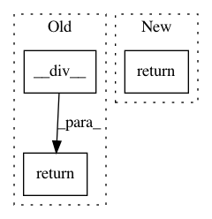

4b01309fefd277a5f4910b3f0eb1ad2b83fc7281,scipy/sparse/base.py,spmatrix,__numpy_ufunc__,#spmatrix#Any#Any#Any#Any#,719
Before Change
elif func is np.divide:
if pos == 0:
return self.__div__(inputs[1])
else:
return NotImplemented
elif func is np.true_divide:
After Change
elif func is np.divide:
true_divide = (sys.version_info[0] >= 3)
rdivide = (pos == 1)
return self._divide(*without_self,
true_divide=true_divide,
rdivide=rdivide)
elif func is np.true_divide:
rdivide = (pos == 1)
return self._divide(*without_self, true_divide=True, rdivide=rdivide)
else:
In pattern: SUPERPATTERN
Frequency: 3
Non-data size: 3
Instances
Project Name: scipy/scipy
Commit Name: 4b01309fefd277a5f4910b3f0eb1ad2b83fc7281
Time: 2013-09-11
Author: pav@iki.fi
File Name: scipy/sparse/base.py
Class Name: spmatrix
Method Name: __numpy_ufunc__
Project Name: scipy/scipy
Commit Name: aee644931d66a4e4eca62da1ce32597e330e341c
Time: 2006-12-20
Author: mattknox_ca@localhost
File Name: Lib/sandbox/timeseries/timeseries.py
Class Name: TimeSeries
Method Name: __idiv__
Project Name: scipy/scipy
Commit Name: aee644931d66a4e4eca62da1ce32597e330e341c
Time: 2006-12-20
Author: mattknox_ca@localhost
File Name: Lib/sandbox/timeseries/timeseries.py
Class Name: TimeSeries
Method Name: __div__